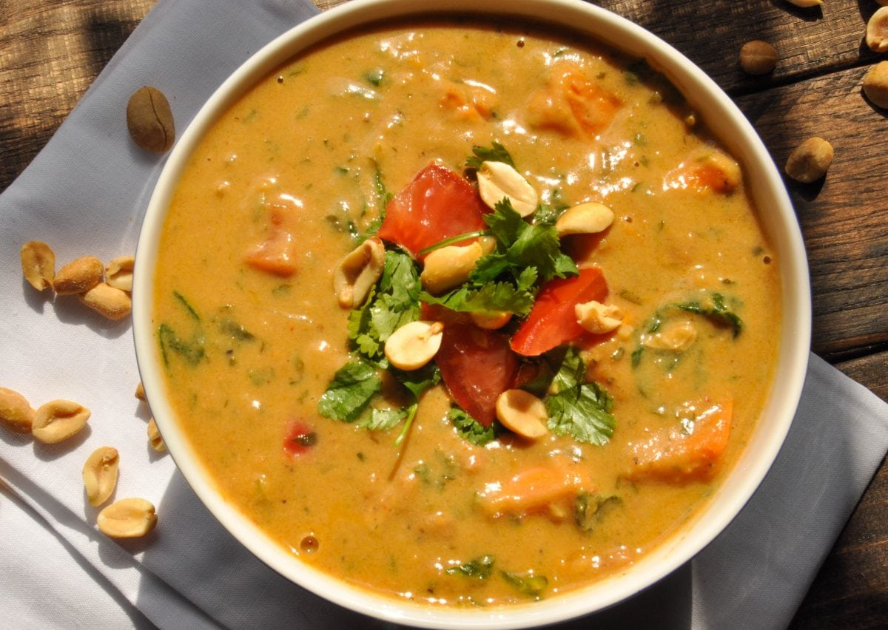

Required Ingredients For Peanut Soup
Serving: 6 Persons.
1 tablespoon extra-virgin olive oil, plus more for drizzling
1 medium carrot, peeled and coarsely chopped (1/2 cup)
1 medium onion, chopped (1 1/2 cups)
Coarse salt and freshly ground pepper
4 cups unsalted roasted peanuts
8 cups low-sodium chicken broth
3 tablespoons fresh lemon juice
Diced Granny Smith apple and red-pepper flakes, for serving
Instructions :
Step 1
Heat oil in a large pot over medium. Add carrot and onion; season with salt. Cook,
stirring occasionally
until vegetables are soft but have not taken on any color, about 5 minutes.
Add peanuts, broth, and 3 cups water; bring to a boil. Reduce heat and simmer,
uncovered, until peanuts are tender, about 1 hour, 20 minutes.
Step 2
Working in batches (do not fill jar more than halfway), puree soup in a blender until smooth,
about 1 minute.
(Or use an immersion blender.) Strain through a fine-mesh sieve, pressing on solids to remove as much liquid as possible. Return to pot and reheat over low, if necessary.
Step 3
Stir lemon juice into soup. Season with salt and pepper and serve, topped with apple,
red-pepper flakes, and a drizzle of oil.
Return to main page